A história...
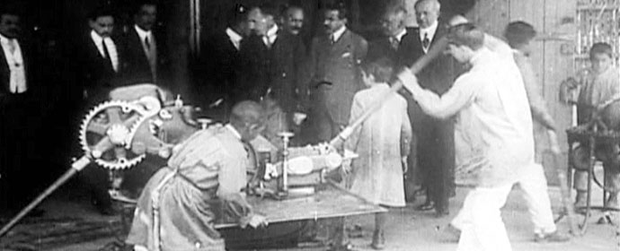Ensino de nível Primário.
As Escolas de Aprendizes Artífices foram estabelecidas por iniciativa do governo Federal na presidência de Nilo Peçanha, conforme disposto no Decreto 7.566 de 1909. No início do Decreto, destaca-se que a criação dessas escolas tinha como objetivo principal auxiliar "as classes proletárias a superar as crescentes dificuldades na luta pela sobrevivência". Além disso, buscava não apenas capacitar os filhos dos menos favorecidos com a preparação técnica e intelectual necessária, mas também cultivar neles hábitos de trabalho produtivo, afastando-os da ociosidade ignorante, que era considerada uma escola para vícios e crimes, o Decreto aponta que a criação dessas escolas primeiramente visava facilitar “às classes proletárias vencer as dificuldades sempre crescentes da luta pela existência”, como também “(...) não só habilitar os filhos dos desfavorecidos da fortuna com o indispensavel preparo technico e intellectual, como fazel-os adquirir habitos de trabalho proficuo, que os afastará da ociosidade ignorante, escola do vício e do crime.”
Essas escolas tinham um público-alvo específico, admitindo indivíduos de dez a treze anos, provenientes das classes desfavorecidas e que não apresentassem doenças contagiosas ou defeitos que os impedissem de aprender uma profissão os “desfavorecidos da fortuna”, “sem moléstia infecto-contagiosa, nem (...) defeitos que o impossibilitem para o aprendizado de oficio”.
Naquela época (início do século XX), o Brasil havia recentemente abolido a escravidão, contando aproximadamente com 636 fábricas, uns 14 milhões de habitantes e cerca de mais ou menos 54 mil trabalhadores. O surgimento do Ensino Profissional no país foi marcado por elitismo e discriminação, pois buscava profissionalizar jovens das classes trabalhadoras, transformando-os em mão de obra barata para a produção agropecuária e industrial.
É relevante ressaltar o contexto socioeconômico do estado de São Paulo. A formação profissional desempenhou um papel crucial no impulso à industrialização, uma vez que São Paulo apresentava condições como capital acumulado na cafeicultura de exportação, capacidade empresarial voltada para a acumulação de capital, mercado consumidor para produtos fabris, contingente de trabalhadores dispostos a migrar da agricultura para a manufatura e indústria, além da oferta de energia elétrica para sustentar as empresas.
As Escolas de Aprendizes Artífices eram estruturadas em oficinas, supervisionadas por um mestre, onde ocorria as aulas e se fabricavam alguns produtos manufaturados. Durante um período, esses produtos eram vendidos. O horário de funcionamento era das 10h00 às 16h00, com a previsão de dois cursos noturnos: o curso primário para alunos que ainda não sabiam ler, visto que o ensino primário não era obrigatório, e o curso de desenho para aqueles sem conhecimento prévio, visando a prática nas oficinas. No primeiro ano de funcionamento da Escola de Aprendizes e Artífices de São Paulo, havia 135 alunos matriculados, com uma frequência de 95.
O cenário mundial na época, marcado pela eclosão da Primeira Guerra Mundial, apresentou desafios e oportunidades para o desenvolvimento do ensino industrial no Brasil. A impossibilidade de importar bens industriais devido ao estrangulamento externo causado pela guerra propiciou o crescimento da indústria nacional.Em resposta à partir de 1914, houve a necessidade de abrir numerosas indústrias, especialmente entre Rio de Janeiro e São Paulo, para a produção de artigos de primeira necessidade.
 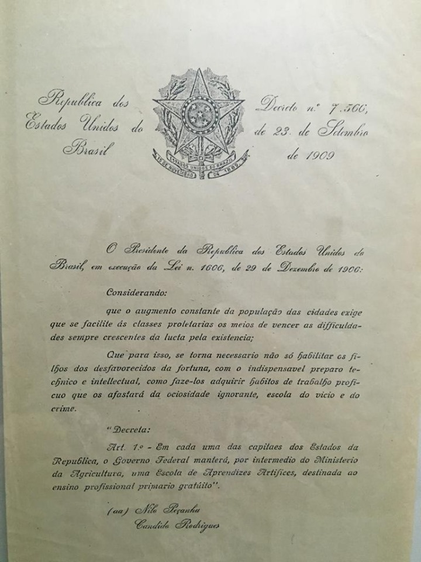
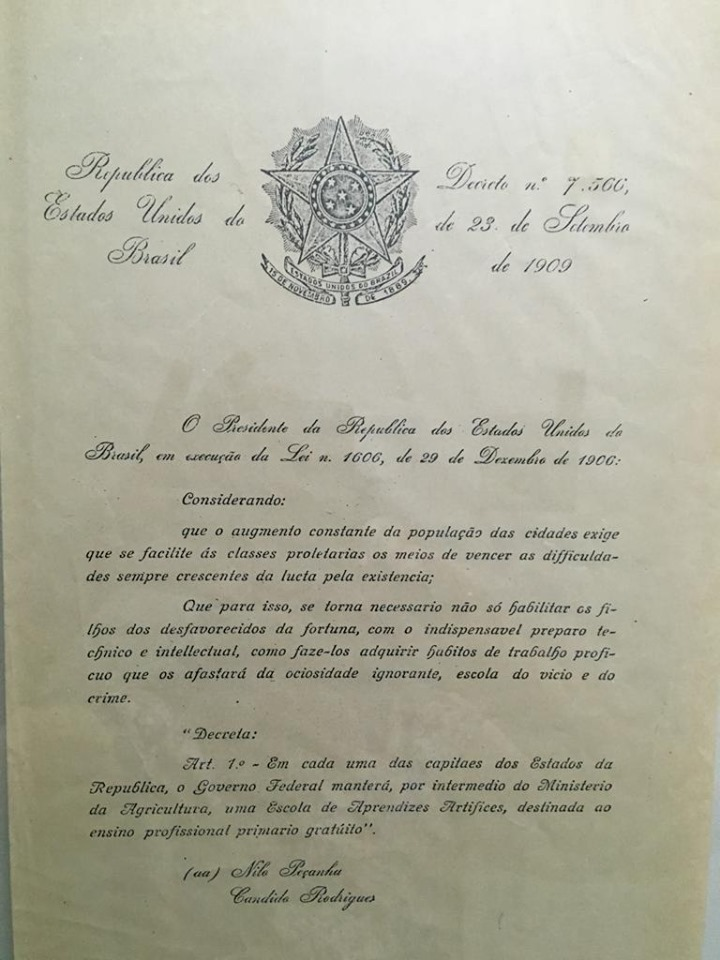Em 19 de fevereiro de 1910, a Escola foi inicialmente instalada no Bairro da Luz, em um edifício na Avenida Tiradentes. O regime adotado era o de Externato, e o público-alvo eram menores provenientes de famílias de baixa renda, com idade a partir de 12 anos.

A Escola de Aprendizes Artífices de São Paulo foi oficialmente inaugurada em 24 de junho de 1910, com a previsão inicial de oferecer cursos de Tornearia, Mecânica, Eletricidade, Carpintaria e Artes Decorativas. A primeira edificação, ficava localizada na Avenida Tiradentes, n° 15 ou 15-B, mais tarde seria ocupada pelo Hospital da Cruz Azul. A Escola de Aprendizes tinha como propósito primordial a formação de operários e contramestres, proporcionando ensino prático e conhecimentos técnicos necessários aos alunos interessados em aprender um ofício. A manutenção era de responsabilidade do Ministério da Agricultura, Indústria e Comércio, responsável pelo ensino profissional não superior. O decreto de criação estipulava a instalação de cinco oficinas em cada escola.
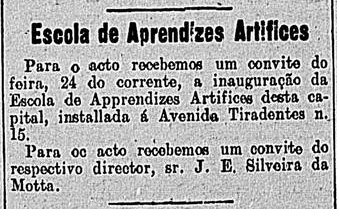Em São Paulo a escola foi organizada conforme organograma.
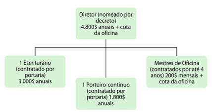Foto do diretor com os professores.
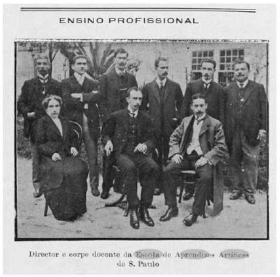O Decreto-lei nº 9.070, de 25 de outubro de 1911, estabeleceu uma nova estrutura pedagógica e administrativa para a escola, conhecida como Regulamento Pedro de Toledo, que definiu o ano escolar em dez meses, a duração do curso em 4 anos, o regime como externato, o aprendizado de um único ofício por aluno, e introduziu cursos obrigatórios de primário e desenho no horário diurno. A idade de matrícula foi alterada para 12 a 16 anos, com a proibição de ingresso de pessoas com deficiência física. Além disso, o regulamento garantiu autonomia na formulação dos programas pelos professores e mestres de oficinas. Ficou autorizada a contratação de professores adjuntos quando o número de alunos por oficina ultrapassar a marca de 50 alunos.
Novo organograma de organização da escola.
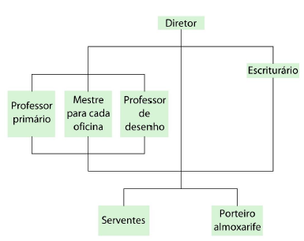A diretoria da Escola persistia oficialmente na questão da inadequação do edifício, pleiteando a construção de um novo edifício. Em 1917, a Diretoria do Serviço Sanitário do Estado considerou o edifício inadequado à higiene escolar e determinou sua mudança em caráter de urgência. Dessa forma, com grande dificuldade de conseguir um novo edifício, foram obtidos em caráter provisório alguns armazéns para abrigar a Escola.
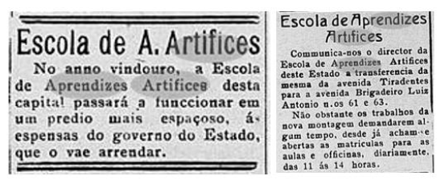Em 1918, a Escola muda de endereço, para essa edificação localizada na Avenida Brigadeiro Luiz Antônio, 61 e 63. Seu diretor continuou insistindo junto ao estado e à União quanto à necessidade de obter um edifício próprio. Em 1920, finalmente, consegue a autorização para a doação de um terreno e a possibilidade de construção da edificação.
Em 1920, a escola obteve autorização para a doação de um terreno e a construção de um novo edifício, concluído em 1921, localizado entre as Alamedas Nothman, Rua Apa e Comandante Marcondes Salgado.
A Escola permaneceu na Av. Brigadeiro Luiz António até 1921, quando o edifício que foi projetado para abrigar a nova escola ficou pronto. O novo edifício foi construído entre as Alamedas Nothman, Rua Apa e Comandante Marcondes Salgado (hoje General Júlio Marcondes Salgado), à época, Rua de São João. A localização, no Bairro de Santa Cecília, era muito próxima ao Bairro da Luz, em região dotada de infraestrutura e transportes já na década de 1920.
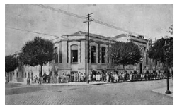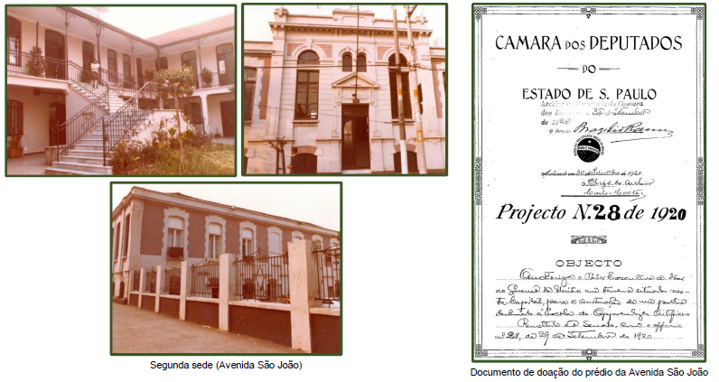
Nos primeiros anos, o edifício atendeu satisfatoriamente às necessidades da instituição, que tinha 330 alunos em 1921. O diretor João Evangelista Silveira da Mota liderou a escola de fevereiro de 1910 a fevereiro de 1932, sucedido por outros diretores até janeiro de 1937
Diretores
No período de 1909 a 1937, a Escola de Aprendizes Artífices de São Paulo teve quatro diretores, de acordo com o documento institucional do IFSP. Glicério Rodrigues Filho, nomeado em 18 de junho de 1934, foi o primeiro diretor do Liceu de São Paulo e permaneceu na função até 19 de setembro de 1939.
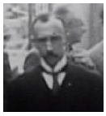João Evangelista Silveira da Mota (fev/1910 à fev/1932)
Após sua gestão de 22 anos, assumiram a Escola no período de fevereiro de 1932 a janeiro de 1937:
Sebastião de Queiroz Couto (fev. /1932 a nov. /1933)
Francisco da Costa Guimarães (nov. /1933 a jun./1934)
Glicério Rodrigues Filho (jun./1934 a jan.1937).